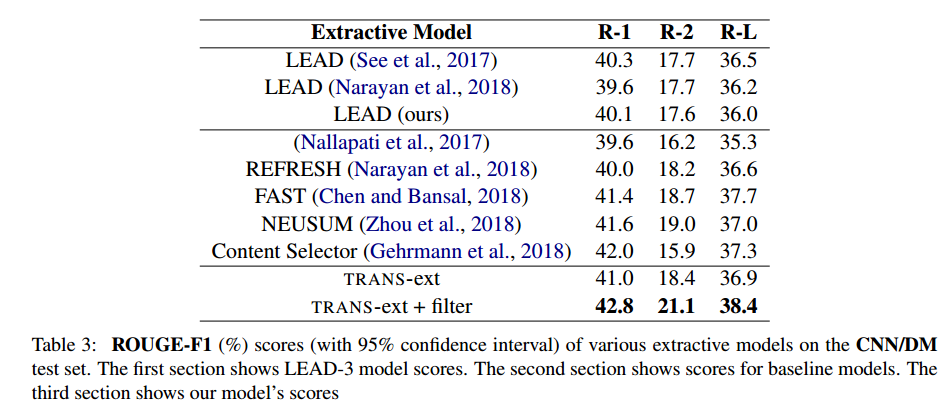
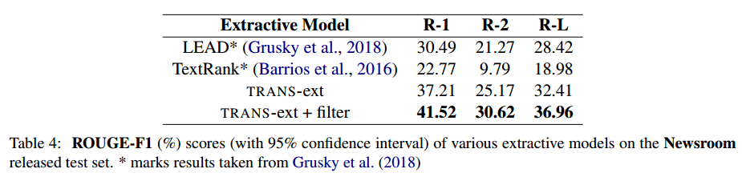
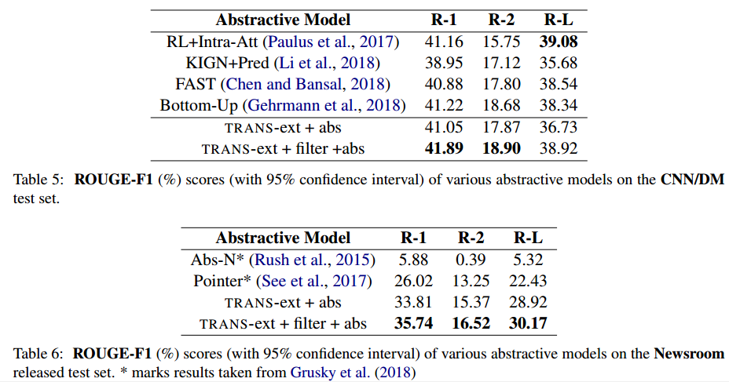

来源：EMNLP2019 workshop
对单文档进行抽取式和生成式摘要。
模型
抽取式摘要
使用句子级别的Transformer编码器，从句子级别对句子对文档进行编码。也就是输入是句子表示序列，每个句子表示是句子中所有单词表示的平均。论文中使用的是Glove词向量。
经过Transformer编码器得到的句子表示经过softmax classifier，为每个句子判断是0还是1（分别表示是否应该被包含在摘要中），然后根据抽取式的reference summary进行监督训练。
其他一些trick
1. Filtering
由于目前的reference summary都是abstract的，因此在训练抽取式模型的时候，都是先将生成式的reference转换为抽取式的reference，然后用来监督抽取式模型。但是一些reference summary中的句子具有较高的抽象性，与原文句子差别较大，因此，reference summary的抽象程度越高，转换过来的抽取式reference越不准确。因此本文过滤掉训练集中那些 reference summary与原文的bigram交集为0的样本。
2. Tuning
对于将生成式reference摘要转换为抽取式lable 的过程，之前的方法都是贪婪地选择那些能够最大化ROUGE得分的句子。本文中则是选择那些与生成式reference摘要具有最大的bigram overlap的句子作为摘要。同时提出了bigram都是stop words的情况。
$$
score(R^t_j)=argmax_{i}(bigram(D^i_j, R^t_j))
$$
其中$R^t_j$是reference summary中的第t个句子，$D^i_j$是原文档中的第i个句子。简单来说就是，对于参考摘要中的每个句子，取与它bigram overlap最高的原文中的句子作为抽取式标签。
3. Imbalanced Extractive Labels
由于摘要通常都是原文的一小段，因此参考摘要的标签通常大部分都是0，只有一小部分是1。这种情况下，既是分类准确率高通常也不能说明什么（因为大部分都分类为0就可以得到很高的准确率）。因此训练中使用的是F1得分作为目标进行训练。
此外，在训练过程中，本文还强制将一些随机的句子标为1，并随后屏蔽掉他们的权重，这样来平衡标签中的不平衡问题。
（这里原文中只提了这么一句，不是很清楚。猜想是随机将一些句子标签设为1，但是在计算损失的时候不考虑这些句子吧。）
4. Number of sentences to extract
观察到gold summary通常包含3到4个句子，因此本文默认抽取top 3 的句子作为摘要，但是对于softmax函数得到的概率超过0.55的句子，则额外再抽取第4个句子。
生成式摘要
生成式摘要是对上面抽取出来的句子进行进一步的生成式摘要。原文档包含n个句子，抽取出来的摘要包含m个句子，这里m < n。
生成式摘要的框架采用：encoder-encoder-aligner-decoder的架构。
首先第一个encoder使用一个Transformer编码器。这里输入不再是文档级别的表示了，而是句子级别的表示。同时，每个句子的表示不是单词表示的平均了，而是单词表示的拼接。
第二个encoder使用一个单向GRU。该encoder的输入就是上一个Transformer encoder的输出。
最后使用一个GRU Decoder来进行文本生成。上一个GRU的state作为Decoder的初始状态。每个时刻，decoder接收上一个时刻生成的单词$y_{t-1}$以及上一时刻的状态$s_{t-1}$作为输入，并通过在整个词表上进行softmax来生成该时刻的单词。
实验
本文实验在CNN-DailyMail以及Newsroom数据集上进行。
实验结果以及对比的baselines如图所示。



总结
感觉本文总体的方法上的创新型不大。不过文章的写作和结构值得学习。
抽取式部分，就是采用了Transformer作为编码器进行了一个序列标注的分类任务。主要创新点貌似在于文中提及的几个小trick，比如抽取式的gold label的构建方法；以及对于没有bigram overlap的样例的过滤。
生成式部分则是在Transformer上堆叠了一个GRU-based encoder + decoder进行一下生成。
整体仍然属于监督式摘要方法，需要有gold label的指导。